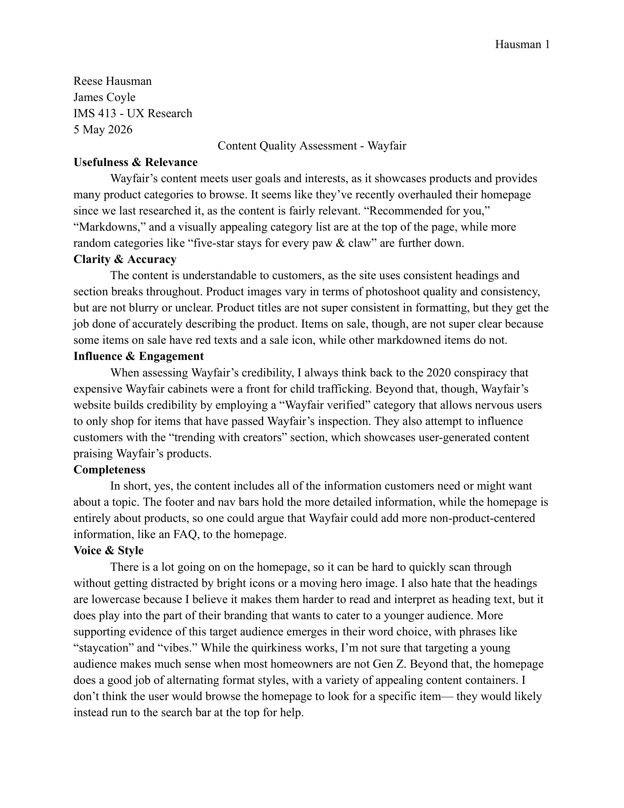
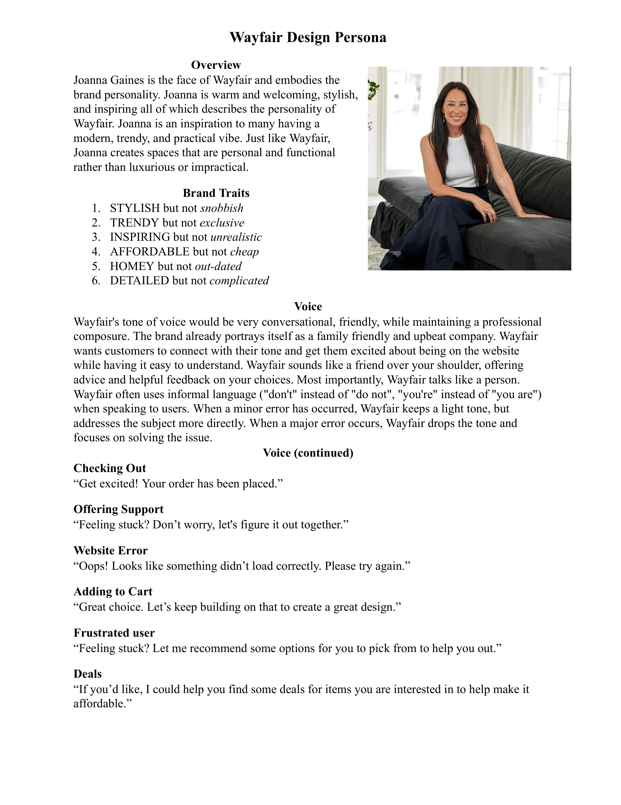

Content Quality Assessment
Another UX methodology we utilized was evaluating a company's content strategy approach. To practice, my team & I looked at Student Life pages of prestigious universities, identifying the tone of the page and if that matched to what their branding should be. I learned how much page content influences tone, not just design choices, but even the fact of if people in a picture are smiling or not.
Circling back on Wayfair research, I audited Wayfair's homepage content using Content Science Review's Content Quality Checklist. I found that all of Wayfair's content is there, but the site gets lost in the voice & style category. For example, vocabulary like "staycation" and "vibes" don't make much sense to use when trying to appeal to homeowners, a demographic that is largely not Gen-Z.
Design Persona
Like the persona before it, this design persona was built off of each team member creating their own unique design persona. Some went more in the direction of a friendly neighbor, while others went in a more AI-focused direction, but we decided on an HGTV-inspired stylish and inspirational design persona, since Wayfair fits these personality traits the most.
I learned a lot about how even the smallest copy, such as error messages, can be a great place to explore tone and emphasize branding.

